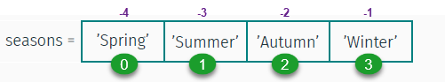
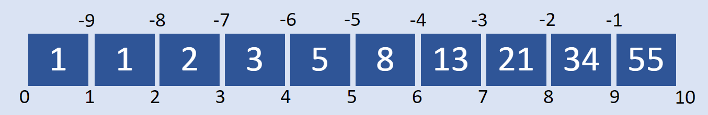
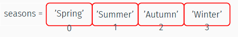

Colecciones
Contents
Colecciones¶
Tipos de colecciones¶
Los tipos de colecciones más utilizados son
listuna lista ordenada y mutable de valorestupleuna lista ordenada e inmutable de valoressetuna lista mutable pero no ordenada de valoresdictun diccionario no ordenado
Antes de ver los tipos de colecciones, veremos un truco muy útil para imprimir el resultado de una expresión junto con la expresión que la genera. Algunos ejemplos:
print(f'{11 + 22 = }')
11 + 22 = 33
x = 4
print(f'{x = }')
print(f'{x**2 = }')
print(f'{x / 6 = }')
print(f'x al cuadrado es {x**2 = }')
x = 4
x**2 = 16
x / 6 = 0.6666666666666666
x al cuadrado es x**2 = 16
Listas¶
Haciendo listas¶
Para hacer una lista, enumeramos sus elemento entre un par de [ ]
seasons = ['Spring', 'Summer','Autumn','Winter']
seasons
['Spring', 'Summer', 'Autumn', 'Winter']

Las listas pueden tener elementos heterogéneos (aunque generalmente no es una buena idea)
mylist = [4, 3.0, 'abc', 5, 8, -3, 0 , 2]
mylist
[4, 3.0, 'abc', 5, 8, -3, 0, 2]
Para modificar los elementos de la lista:¶
seasons[2] = 'Fall'
seasons
['Spring', 'Summer', 'Fall', 'Winter']
Slicing¶
Definamos la siguiente lista, con números de la secuencia de Fibonacci:

fibonacci = [1,1,2,3,5,8,13,21,34,55]
fibonacci
[1, 1, 2, 3, 5, 8, 13, 21, 34, 55]
Para obtener una franja de datos, usamos el operador de dos puntos “:”
fibonacci[4:7]
[5, 8, 13]
Es decir, unalista[a:b] da los elementos desde la posición a (incluída) hasta la posición b (excluída). Una manera más sencilla de entenderlo es imaginar que los enteros a y b hacen referencia a los “bordes” entre los elementos (ver figura arriba), en cuyo caso unalista[a:b] da por resultado otra lista con todos los elementos entres los bordes a y b.
Si omitimos el primer índice, se sobreentiende que es desde el inicio de la lista. Por ejemplo, los primeros tres elementos
fibonacci[:3]
[1, 1, 2]
Si omitimos el segundo índice, se sobreentiende que es hasta el final de la lista. Por ejemplo, para omitir los primeros cinco elementos
fibonacci[5:]
[8, 13, 21, 34, 55]
También podemos contar desde el final, usando índices negativos. Por ejemplo, los últimos dos elementos
fibonacci[-2:]
[34, 55]
fibonacci[-6:-3]
[5, 8, 13]
o incluso combinar índices positivos y negativos: acá “quitamos” los primeros 2 elementos y los últimos tres:
fibonacci[2:-3]
[2, 3, 5, 8, 13]
Note que las dos operaciones siguientes dan por resultado el elemento del índice 3, pero la primera es una lista de un elemento y la segunda es el elemento mismo:
fibonacci[3:4] # a pesar de que es un solo elemento, retorna una lista
[3]
fibonacci[3]
3
Si los dos índices son iguales, tendremos una lista vacía:
fibonacci[3:3]
[]
También podemos especificar cada cuántos elementos tomar, agregando un segundo “:” y un entero que indique cada cuántos elementos
fibonacci[1:7:2]
[1, 3, 8]
Podemos omitir el primer y segundo índice como antes. Por ejemplo, para rescatar los elementos en índices pares
fibonacci[::2]
[1, 2, 5, 13, 34]
y los índices impares
fibonacci[1::2]
[1, 3, 8, 21, 55]
Copiando una lista¶
nueva_lista = vieja_lista hace una variable nueva que apunta a la misma lista que la lista anterior:¶
otralista = fibonacci
otralista
[1, 1, 2, 3, 5, 8, 13, 21, 34, 55]
otralista[0] = 99999
print(f'{otralista=} \n{fibonacci=}')
otralista=[99999, 1, 2, 3, 5, 8, 13, 21, 34, 55]
fibonacci=[99999, 1, 2, 3, 5, 8, 13, 21, 34, 55]
Vemos que es la misma lista al comparar sus id (que es como el número de identificación del objeto en memoria):
print(f'{id(otralista)=} \n{id(fibonacci)=}')
id(otralista)=2236539461504
id(fibonacci)=2236539461504
Con la palabra clave is podemos comprobar que dos variables hacen referencia a un mismo objeto:
otralista is fibonacci
True
nueva_lista = vieja_lista.copy() hace una copia independiente de la original:¶
fibonacci[0] = 1
copialista = fibonacci.copy()
copialista[-1] = 999999
print(f'{otralista=} \n{fibonacci=} \n{copialista=}\n')
print(f'{id(otralista)=} \n{id(fibonacci)=} \n{id(copialista)=}')
otralista=[1, 1, 2, 3, 5, 8, 13, 21, 34, 55]
fibonacci=[1, 1, 2, 3, 5, 8, 13, 21, 34, 55]
copialista=[1, 1, 2, 3, 5, 8, 13, 21, 34, 999999]
id(otralista)=2236539461504
id(fibonacci)=2236539461504
id(copialista)=2236539486464
Manipulando listas¶
Hagamos una lista de frutas. Vemos que el código es más legible si le damos a la lista un nombre sustantivo plural que indique la naturaleza de sus elementos:
frutas = ['manzana','naranja','uva','kiwi']
list.append(x) Agrega el elemento x al final de la lista¶
frutas.append('manzana')
frutas
['manzana', 'naranja', 'uva', 'kiwi', 'manzana']
list.extend(L) Agrega todos los elementos de la lista L al final de la lista¶
frutas.extend(['mango','banano','kiwi'])
frutas
['manzana', 'naranja', 'uva', 'kiwi', 'manzana', 'mango', 'banano', 'kiwi']
list.insert(i,x) Inserta el elemento x en la posición de índice i¶
frutas.insert(2,'guayava')
frutas
['manzana',
'naranja',
'guayava',
'uva',
'kiwi',
'manzana',
'mango',
'banano',
'kiwi']
len(list) cuenta el número de elementos de la lista¶
len(frutas)
9
list.remove(x) Elimina el primer elemento x de la lista¶
frutas.remove('kiwi')
frutas
['manzana', 'naranja', 'guayava', 'uva', 'manzana', 'mango', 'banano', 'kiwi']
list.pop(i) Eliminina el elemento en la posición i y lo retorna¶
frutas.pop()
'kiwi'
frutas
['manzana', 'naranja', 'guayava', 'uva', 'manzana', 'mango', 'banano']
list.index(x) Retorna el índice del primer elemento x de la lista¶
frutas.index('uva')
3
list.count(x) Retorna el número de veces que aparece x en la lista¶
frutas.count('manzana')
2
list.sort() Ordena todos los elementos de la lista, in situ¶
frutas.sort()
frutas
['banano', 'guayava', 'mango', 'manzana', 'manzana', 'naranja', 'uva']
list.reverse() Revierte el orden de todos los elementos de la lista, in situ¶
frutas.reverse()
frutas
['uva', 'naranja', 'manzana', 'manzana', 'mango', 'guayava', 'banano']
frutas.sort(reverse=True)
frutas
['uva', 'naranja', 'manzana', 'manzana', 'mango', 'guayava', 'banano']
Tuplas¶
Una tupla es similar a una lista, pero una vez que se define sus elementos no pueden cambiarse. Se define enumerando sus elementos entre un par de ( )
seasons = ('Spring', 'Summer','Autumn','Winter')

Para obtener datos:
seasons[2]
'Autumn'
seasons[-3]
'Summer'
Sin embargo, los datos no se pueden modificar
seasons[2] = 'Fall'
Las tuplas también entienden de franjas
M = ('Ene', 'Feb', 'Mar', 'Abr', 'May', 'Jun', \
'Jul','Ago','Sep','Oct','Nov','Dic')
# Separar los meses por trimestre:
Q1, Q2, Q3, Q4 = M[:3], M[3:6], M[6:9], M[9:]
Q2
('Abr', 'May', 'Jun')
M
('Ene',
'Feb',
'Mar',
'Abr',
'May',
'Jun',
'Jul',
'Ago',
'Sep',
'Oct',
'Nov',
'Dic')
mal = (9)
type(mal)
int
Para hacer una tupla de un único elemento:
solo = (55, )
type(solo)
tuple
Los paréntesis no son del todo necesarios:
solito = 77,
type(solito)
tuple
colores = 'rojo', 'verde', 'azul'
print(f'{type(colores) = }, \n{colores = }')
type(colores) = <class 'tuple'>,
colores = ('rojo', 'verde', 'azul')
Conjuntos¶
Para hacer un conjunto, enumeramos sus elementos entre { }. Alternativamento, transformamos una lista en un conjunto usando la función set.
M2 = {2, 4, 6, 8, 10, 12, 14}
M3 = set([3, 6, 9, 12, 15])
set.add(x) Agrega un elemento x al conjunto¶
M2.add(16)
M2
{2, 4, 6, 8, 10, 12, 14, 16}
set.update([x,y,z]) Agrega varios elementos al conjunto¶
M3.update([18, 21])
M3
{3, 6, 9, 12, 15, 18, 21}
set.copy() Retorna una copia del conjunto¶
M2c = M2.copy()
M2c
{2, 4, 6, 8, 10, 12, 14, 16}
set.discard(x) Elimina el elemnto x del conjunto (si es miembro)¶
M2c.discard(10)
M2c
{4, 6, 8, 12, 14, 16}
set1.union(set2) Retorna elementos que aparecen en cualquiera de los conjuntos¶
M2.union(M3)
{2, 3, 4, 6, 8, 9, 10, 12, 14, 15, 16, 18, 21}
set1.intersection(set2) Retorna elementos que aparecen en los dos conjuntos¶
M3.intersection(M2)
{6, 12}
set1.difference(set2) Retorna elementos del conjunto set1 que no estén en set2¶
M2.difference(M3)
{2, 4, 8, 10, 14, 16}
set1.isdisjoint(set2) True si los conjuntos no tienen elementos en común¶
M2.isdisjoint(M3)
False
Diccionarios¶
En Python un “diccionario” es un contenedor de datos que puede almacenar múltiples elementos de datos como una lista de pares
llave:valor.A diferencia de las listas y tuplas, cuyos datos se obtienen por referencia a su índice, los valores almacenados en un diccionario se obtienen por referencia a su llave.
La llave debe ser única en el diccionario, usualmente se una un texto aunque también puede usarse números.
rey = {'nombre': 'John Snow',
'edad': 24,
'hogar': 'Winterfell'}
rey
{'nombre': 'John Snow', 'edad': 24, 'hogar': 'Winterfell'}
Los diccionarios se pueden crear con la función dict:
amigo = dict(nombre='Samwell Tarly', edad=22)
amigo
{'nombre': 'Samwell Tarly', 'edad': 22}
Obteniendo datos
rey['edad']
24
Modificando datos:
rey['hogar'] = 'Castle Black'
rey
{'nombre': 'John Snow', 'edad': 24, 'hogar': 'Castle Black'}
Agregando datos:
rey['amante'] = 'Ygritte'
rey['sabe'] = None
rey
{'nombre': 'John Snow',
'edad': 24,
'hogar': 'Castle Black',
'amante': 'Ygritte',
'sabe': None}
Borrando datos:
del rey['amante'] # la mató Olly en la cuarta temporada!
rey
{'nombre': 'John Snow', 'edad': 24, 'hogar': 'Castle Black', 'sabe': None}
Para almacenar un texto muy largo, podemos encerrarlo en triples comillas dobles:
rey['reina'] = """Daenerys Stormborn of the House Targaryen, First of Her Name,
The Unburnt, Queen of the Andals and the First Men, Khaleesi of the Great Grass Sea,
Breaker of Chains, and Mother of Dragons"""
print(rey['reina'])
Daenerys Stormborn of the House Targaryen, First of Her Name,
The Unburnt, Queen of the Andals and the First Men, Khaleesi of the Great Grass Sea,
Breaker of Chains, and Mother of Dragons
Para obtener todas las llaves de un diccionario, usamos .keys()
rey.keys()
dict_keys(['nombre', 'edad', 'hogar', 'sabe', 'reina'])
Para obtener todos los valores de un diccionario, usamos .values()
rey.values()
dict_values(['John Snow', 24, 'Castle Black', None, 'Daenerys Stormborn of the House Targaryen, First of Her Name, \nThe Unburnt, Queen of the Andals and the First Men, Khaleesi of the Great Grass Sea,\nBreaker of Chains, and Mother of Dragons'])
Para iterar sobre todos los elementos del diccionario, usamos items()
for llave, valor in rey.items():
print(f'rey["{llave}"] = {valor}')
rey["nombre"] = John Snow
rey["edad"] = 24
rey["hogar"] = Castle Black
rey["sabe"] = None
rey["reina"] = Daenerys Stormborn of the House Targaryen, First of Her Name,
The Unburnt, Queen of the Andals and the First Men, Khaleesi of the Great Grass Sea,
Breaker of Chains, and Mother of Dragons